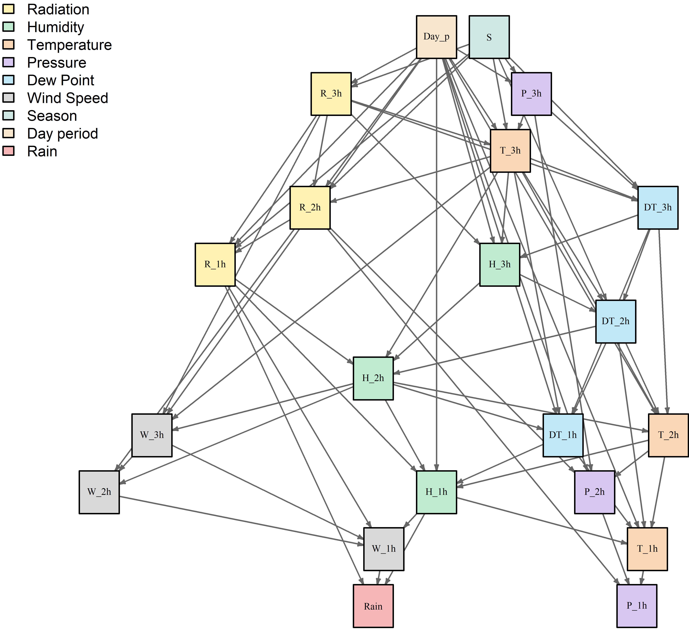

Bayesian Network structure learned for probabilistic rainfall modeling in Rio de Janeiro, Brazil. The network was obtained using the Hill-Climbing algorithm with the Bayesian Information Criterion score. Nodes represent discretized meteorological variables with temporal lags, seasonal variables, and the precipitation response node. Node colors indicate different meteorological variable groups, improving the readability of the learned dependency structure. This online visualization allows users to zoom and drag the graph for clearer inspection.